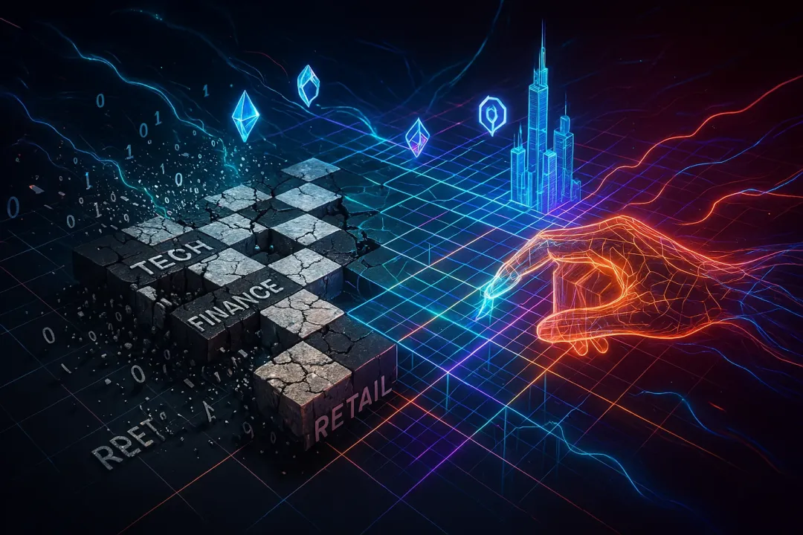
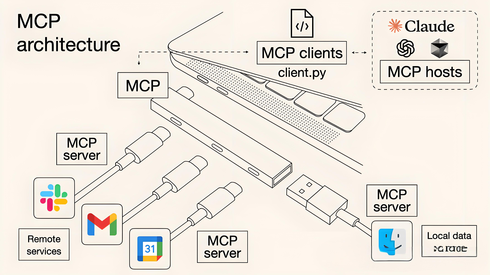

 2024-03-18 技术创新 2025刘润年中大课：AI大潮近在眼前，到底怎么办？ 探讨人工智能浪潮下的机遇与挑战，为企业和个人提供AI时代的应对策略... AI 未来趋势 战略规划 阅读全文 →
 2024-03-12 技术创新 6000字+6个案例：写给普通人的MCP入门指南 通过详实的案例分析和实践指导，帮助普通人快速掌握MCP技术的应用方法... MCP 技术指南 实践案例 阅读全文 →